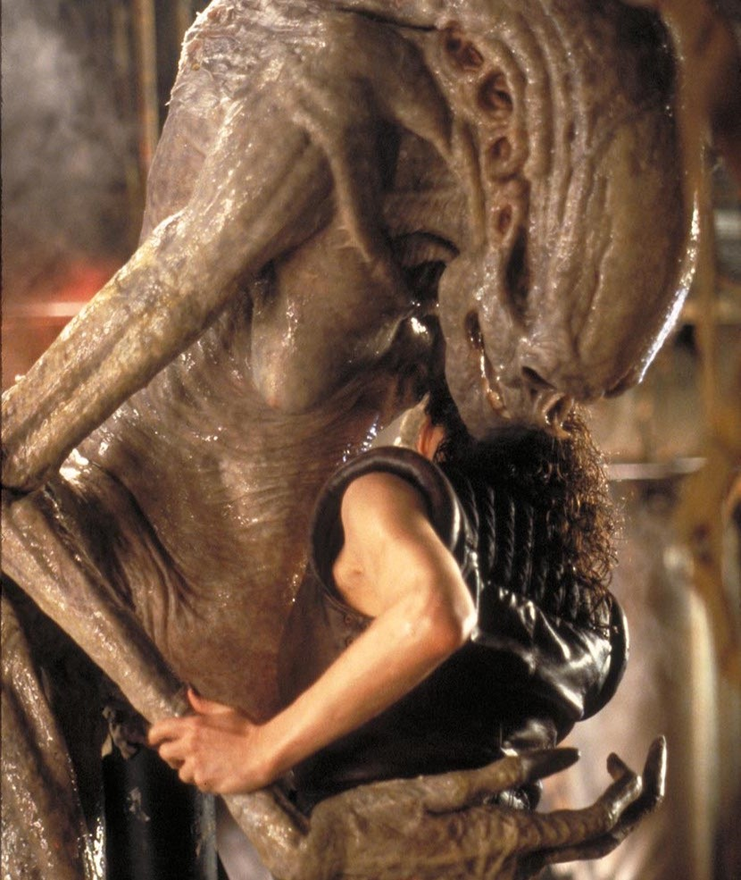

<!DOCTYPE html>
<html xmlns="http://localhost:3000/PR15_Gracia_Pau_Molina_Willy/personajes.html"></html>
<head>
    <meta charset="UTF-8">
    
    <title>Personajes</title>
    <link rel="stylesheet" href="personajes.css">
    <link rel="preconnect" href="https://fonts.gstatic.com">
    <link href="https://fonts.googleapis.com/css2?family=Rubik+Glitch:wght@400;700&display=swap" rel="stylesheet">
    <script src="shadowPartial.js"></script>
</head>
<body>
    <shadow-partial data-html= "plantilla.html" data-css="plantilla.css"></shadow-partial>
    <div class ="main_container">

        <div class="page_title">

            <h1>Personajes</h1>
        
            <p>Dentro de la gran saga de Alien existen muchos personajes... pero a continuación se muestra una pequeña 
                recopilación de los más importantes y de las criaturas más emblematicas de la franquicia. 
            </p>
            <div class = "search-container">
                <input type="text" id="search-input" placeholder="Buscar...">
                <button id="search-button"></button>
            </div>

        </div>

        <div class ="content">
            <div class="personaje">
                <h3>Abrazacaras</h3>
                
                <p>El abrazacaras tiene forma de arácnido con patas largas y una cola flexible. 
                    Su cuerpo tiene una membrana que cubre su parte inferior y una serie de apéndices 
                    que le permiten sujetarse a la cara de su huésped.Su objetivo principal es implantar
                    un embrión xenomorfo en un huésped vivo. Para hacer esto, se adhiere a la cara del huésped 
                    y le inyecta un embrión en el interior. Después de un periodo de tiempo,
                    emerge un xenomorfo.
                </p>
                
            </div>
            <div class="personaje">
                <h3>Zángano (Alien)</h3>
                
                <p>Su anatomía presenta la icónica cabeza alargada y la mandíbula doble. 
                    El Zángano se caracteriza por su agresividad y su capacidad para ocultarse y 
                    acechar a la tripulación de la nave Nostromo (primera entrega de la saga, Alien el octavo pasajero).
                    Su papel en la película es continuar su ciclo de vida mediante la masacre de los tripulantes.
                </p>
                
            </div>
            <div class="personaje">
                <h3>Ellen Ripley</h3>
                
                <p>Es la teniente de la nave espacial Nostromo y protagonista de la pelicula. 
                    Se convierte en la única superviviente después de que la tripulación descubre 
                    una forma de vida alienígena hostil a bordo. Este personaje aparece en otras 
                    secuelas de la saga, y su apariencia va cambiando a lo largo del desarrollo de esta.
                </p>
                
            </div>
            <div class="personaje">
                <h3>Ash (androide)</h3>
                
                <p>Es el oficial de ciencia a bordo de la nave espacial Nostromo. Se revela más adelante en la trama que Ash es 
                    un androide sintético enviado por la corporación para asegurar la recuperación del organismo alienígena, incluso a expensas 
                    de la tripulación humana.
                </p>
                
            </div>
            <div class="personaje">
                <h3>Rebecca "Newt" Jorden</h3>
                
                <p> Newt es la única superviviente en la colonia terraformada de LV-426 después de un ataque de xenomorfos. 
                    Todos los colonos, incluida su familia, son asesinados por las criaturas. Ripley desarrolla un fuerte vinculo
                    con este personaje.
                </p>
                
            </div>
            <div class="personaje">
                <h3>Reina Alien</h3>
                
                <p>Tiene una cabeza distintiva y una estructura corporal más grande, con un abdomen 
                    en forma de saco donde almacena los huevos. Esta desempeña un papel crucial en 
                    la producción y defensa de la colmena originada en la segunda entrega de la saga: 
                    Alien, el regreso. Dado a que su existencia muestra la capacidad reproductiva de la 
                    especie a la hora de poner huevos, los cuales contienen Abrazacaras. 
                </p>
                
            </div>
            <div class="personaje">
                <h3>Dwayne Hicks</h3>
                
                <p>Hicks es un marine colonial que forma parte de la misión de rescate en el planeta LV-426,
                    el cual tiene una apariencia robusta y va vestido de militar. A lo largo de la película, 
                    Hicks y Ripley trabajan juntos para enfrentar la amenaza de los xenomorfos, y desarrollan 
                    una relación que se vuelve crucial para la trama.
                </p>
                
            </div>
            <div class="personaje">
                <h3>Alien Corredor</h3>
                
                <p>También conocido como el "Alien del Perro". Su anatomía muestra adaptaciones específicas basadas 
                    en el organismo del perro, lo que contribuye a su comportamiento y aspecto (el huésped es un perro). 
                    Se destaca por su velocidad y capacidad para moverse rápidamente a través de los entornos, lo que lo 
                    hace más difícil de enfrentar para los personajes de la película.
                </p>
                
            </div>
            <div class="personaje">
                <h3>Jonathan Clemens</h3>
                
                <p>Clemens es el médico de la prisión en Fiorina "Fury" 161. Este cuida de Ripley cuando ella se 
                    estrella en el planeta. Se convierte en un aliado de Ripley en medio de la creciente amenaza de 
                    un xenomorfo en la instalación donde transcurre la tercera entrega de la saga. 
                </p>
                
            </div>
            <div class="personaje">
                <h3>Recién nacido/híbrido</h3>
                
                <p>Este xenomorfo es el resultado de experimentación genética y clonación 
                    a partir de ADN humano y xenomorfo. Tiene una apariencia diferente a la 
                    de los xenomorfos anteriores, aunque comparte algunas características con ellos, como la cabeza 
                    alargada y la mandíbula doble, pero su estructura corporal es más humana. Tiene un comportamiento 
                    diferente a los xenomorfos vistos hasta ahora. 
                </p>
                
            </div>
            <div class="personaje">
                <h3>Ripley 8</h3>
                
                <p>Es el resultado de la clonación de la anterior protagonista Ripley. Ejerce de protagonista en la cuarta entrega de la saga, 
                    Alien: Resurrección. Su apariencia es igual a la anterior , pero como diferencia cabe destacar la 
                    relación simbiótica con los xenomorfos.
                </p>
                
            </div>
            <div class="personaje">
                <h3>Alien Diácono</h3>
                
                <p>Nacido de un ingeniero como huésped, comparte algunas características con los xenomorfos tradicionales, como la 
                    cabeza alargada y una apariencia agresiva, pero tiene rasgos distintivos. Su origen está vinculado al contenido de 
                    la cápsula que el Ingeniero bebe antes de enfrentarse a los personajes principales en la entrega de Prometheus.
                </p>
            </div>
            <div class="personaje">
                <h3>Elizabeth Shaw</h3>
                
                <p>Es una arqueóloga que lidera la expedición a bordo de la nave espacial Prometheus en busca de respuestas sobre el 
                    origen de la humanidad. A lo largo de la película, Shaw se convierte en el foco principal de la historia, especialmente 
                    a medida que descubre la verdad detrás de los Ingenieros, una raza alienígena antigua, y su conexión con la humanidad.
                </p>
                
            </div>
            <div class="personaje">
                <h3>Ingenieros</h3>
                
                <p>Son humanoides de gran estatura y constitución física con piel pálida y cabezas alargadas, incluyendo ojos oscuros y 
                    sangre de color negra. Son una raza avanzada con conocimientos científicos y genéticos excepcionales. Se les 
                    atribuye la creación de la vida, incluyendo la humanidad y los xenomorfos.
                </p>
            </div>
            <div class="personaje">
                <h3>Neomorfo</h3>
                
                <p>Esta criatura es el resultado de la contaminación genética causada por la exposición a las esporas alienígenas 
                    en el planeta del ingeniero durante el transcurso de la entrega Alien Covenant. Su aspecto es más primitivo en 
                    comparación con los xenomorfos maduros de películas anteriores pero este no deja de ser ágil y rápido. 
                </p>
                
            </div>
            <div class="personaje">
                <h3>Katherine "Danny" Daniels</h3>
                
                <p>Danny la jefa de terraformación a bordo de la nave espacial Covenant. Después de una serie de eventos inesperados 
                    y tragedias en el viaje hacia un nuevo planeta habitable, Daniels se enfrenta a las amenazas alienígenas que 
                    surgen en el curso de la película. Es una de las protagonistas de la pelicula por su lucha y supervivencia contra 
                    los xenomorfos durante la exploración del nuevo mundo.
                </p>
            </div>
        </div>
    </div>
    <shadow-partial data-html="pie.html" data-css="pie.css"></shadow-partial>
</body>